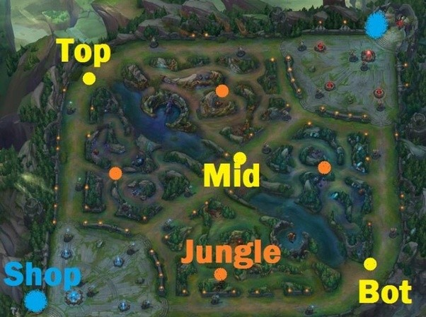
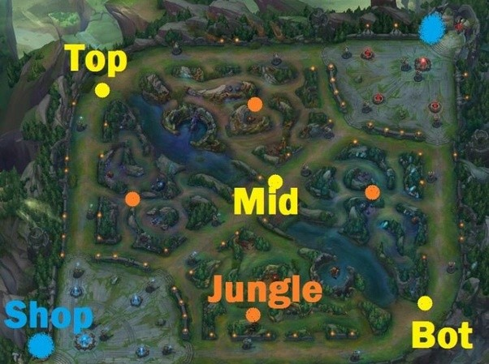
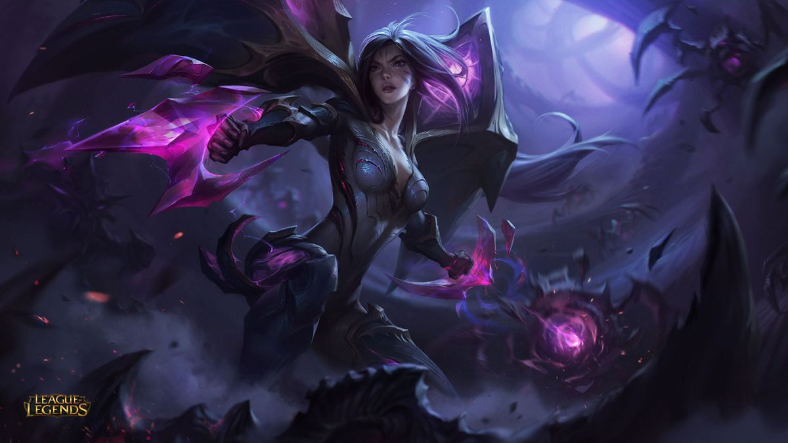
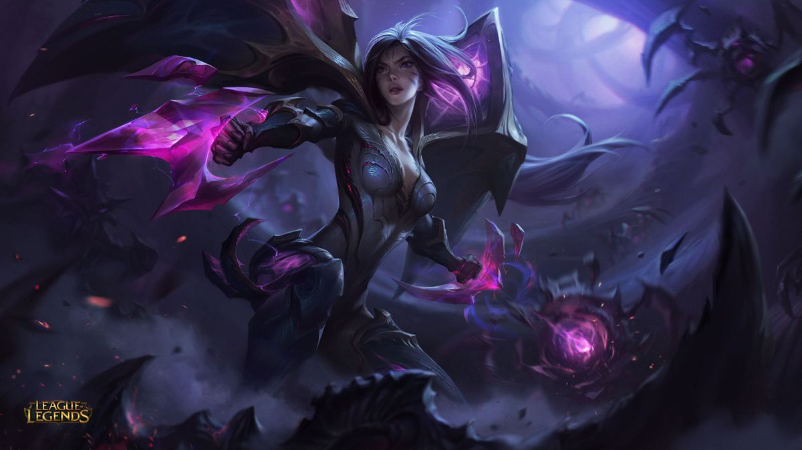

League of Legends is a team based MOBA game. The goal of the game is to destroy the enemy team's nexus. This is done by destroying enemy turrets and inhibitors. There are three maps to choose from: Summoners Rift, the 5v5 map, Twisted Treeline, the 3v3 map, and The Howling Abyss, the ARAM map which stands for All Random All Mid (LeagueofLegendsWiki, 2017). Summoners Rift is the most iconic map and by far the most popular. The map has the iconic three lane pattern that is seen in many other MOBA's like DOTA. There are two teams in League of Legends, each having five players: blue side and red side.
 

The characters in the game are called champions. Every champion in League of Legends is different. All champions have an auto attack, a passive ability, four active abilities which are the champions skills. An auto attack is the default way a unit deals damage. Champions perform basic attacks when an enemy unit is right-clicked on. You can upgrade champion skills by getting exp leveling up. This can be achieved by killing minions and champions. Additionally, every champion gets two summoners spells. These spells are chosen by the player before game and usually grant movement or survivability at a cost of an extra long cooldown. Summoners must be selected before the game begins and cannot be changed in the middle of a game. Every champion in League of Legends has their own unique champion skill set.
A full list of champions can be found here: Champions
On Summoners Rift there are three lanes: top, mid, bot, and a jungle.
| Lane | Types of Champions in Lane |
|---|---|
| Top | Mainly Bruisers and Tanks |
| Mid | Mages and Assassins |
| Bot | Two Champions. A ranged damage dealer called the ADC and a support who protects the ADC |
| Jungle | Jungle is not a lane. All champions can be played jungle but some champions are just better suited for this role |
 
